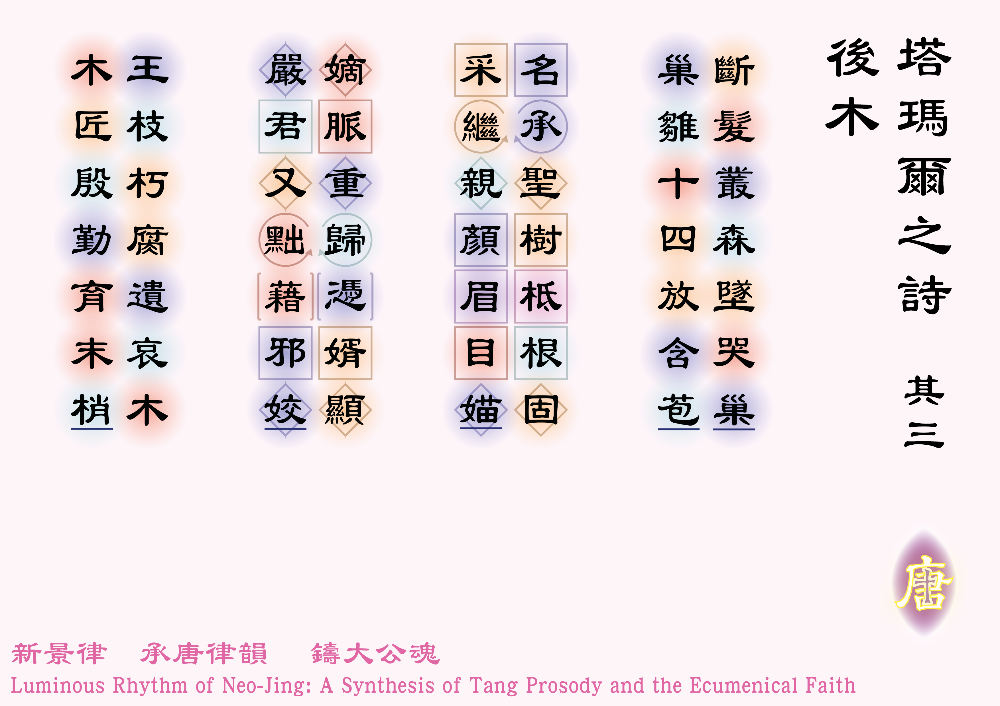
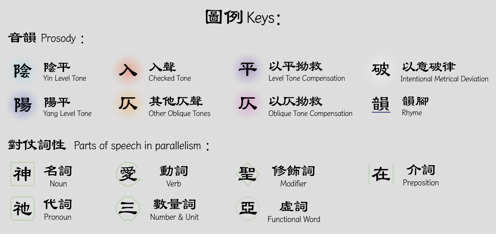

斷髮叢森墜哭巢 [1]斷髮叢森：阿貝沙隆以俊美見稱，特別是其頭髮，但卻在戰事中頭髮被叢林裡的樹枝纏着，被約阿布擊殺，見〈撒慕爾紀下14:25-26〉。，巢雛十四放含苞。
名承聖樹柢根固 [2]聖樹：椰棗樹，「塔瑪爾」在希伯來文中為「椰棗樹」，見 https://www.fao.org/4/y4360e/y4360e06.htm ，采繼親顏眉目媌 [3]* 采繼親顏眉目媌：小塔瑪爾如同父親和姑姑一樣，面容美麗，見〈撒慕爾下13:1〉、〈14:25-27〉；
** 采：姿采、風采；
*** 媌：粵音矛，貌美的樣子。
嫡脈重歸憑婿顯 [4]* 嫡脈重歸憑婿顯：《聖經》裡雖無明文講述，但有記載後來撒羅滿之子勒哈貝罕娶了阿貝沙隆的外孫女（原文作女兒，但根據時間推斷應為孫女）、基貝亞人烏黎耳的女兒瑪阿加，阿貝沙隆應只有小塔瑪爾一個女兒，沒有其他子嗣，故瑪阿加應為小塔瑪爾的女兒，勒哈貝罕即為她的女婿。見〈撒慕爾紀下18:18〉、〈列王紀上15:2〉、〈編年紀下11:20〉及〈編年紀下13:2〉；
** 嫡：王室的正統繼承人；
*** 顯：顯赫。，嚴君又黜藉邪姣 [5]* 嚴君：阿撒王，即瑪阿加的孫子，在任時嚴厲取締偶像崇拜，甚至廢除了拜偶像的太后瑪阿加；
** 黜：粵音出，廢除、罷免的意思；
*** 邪：邪神、偶像；
**** 姣：粵音希肴切，淫蕩的意思。。
王枝朽腐遺哀木，木匠殷勤育末梢。
體裁：七言律詩（仄起首句入韻式）
韻部：平水韻．三肴
創作日期：二零二六年七月六日
| Poetic Verse (Rhymed & Metrical) | Close Literal Translation | 1 | The shorn hair trapped among the woods, the weeping nest down flies, Where fourteen seasons watched the bud in tender sorrow rise. |
With hair severed in the tangled woods, the nest plunges into an abyss of weeping; Within that nest, a fledgling of fourteen cycles blossomed from a tender bud. |
|---|---|---|
| 2 | Named for the holy tree, her roots were anchored deep and true, Blessed with her kindred’s grace, her brow in breathtaking beauty grew. |
Carrying the name of the sacred tree, her roots were firmly anchored; Inheriting the grace of her kindred, her countenance was breathtakingly beautiful. |
| 3[8]Princely tie/the son-in-law: Rehoboam. [9]Stern king/ruler: Asa | The rightful line returned to court, upheld by princely ties, Though a stern king deposed her child for bowing to false lies. |
The rightful royal lineage returned, made prominent through the son-in-law; Yet the stern ruler deposed her again, because of her alluring false idols. |
| 4 | The royal branches rot away, a mourning wood is left; The Carpenter provides His care, to nurse the shoot bereft. |
The royal branches decayed, leaving behind a mourning wood; Lovingly, The Carpenter cultivates the final, tender shoot. |
I wrote Parts I and II of the Poems of Tamar because, while repeatedly reflecting on the prophet Nathan’s rebuke of King David, a profound question of theodicy was triggered in my mind: Why would the Lord use the tragic death of an innocent infant and the rape of Tamar as the punishments for David’s sins?
Yet, as I read further into the scriptures, I realized that the story of the younger Tamar did not truly end there. In the Book of First Kings, a figure appears who is highly likely to be her daughter—Maacah, the wife of King Rehoboam and the mother of King Abijah! This means the younger Tamar is subtly hidden within the genealogy of Jesus Christ! It was a breathtaking theological revelation.
Originally, after writing the two Poems of Tamar and another poem titled The Crying of a Newborn (呱呱), I assumed this creative series had reached its conclusion. However, upon uncovering this theological discovery, I resolved to write one more, even more solemn, seven-character regulated verse (七律)—which I view as a poetic genealogy of Absalom.
In the Gospel of Matthew, the genealogy of Jesus is originally recorded like this:
The book of the genealogy of Jesus Christ, the son of David, the son of Abraham: 'Abraham was the father of Isaac, and Jacob the father of Judah and his brothers, and Judah the father of Perez and Zerah by Tamar... and Jesse the father of David the king. And David was the father of Solomon by the wife of Uriah, and Solomon the father of Rehoboam, and Rehoboam the father of Abijah, and Abijah the father of Asaph... and Jacob the father of Joseph the husband of Mary, of whom Jesus was born, who is called Christ. So all the generations from Abraham to David were fourteen generations, and from David to the deportation to Babylon fourteen generations, and from the deportation to Babylon to the Christ fourteen generations.'
But if we interweave this 'Absalom Branch' into the narrative, the genealogy of Jesus would unfold as follows:
'Abraham was the father of Isaac, and Judah the father of Perez and Zerah by (the ancient) Tamar... and Jesse the father of David. David, by the wife of Uriah, was the father of Solomon; he also, by Maacah the daughter of Talmai king of Geshur, was the father of Absalom and (the elder) Tamar[10]See 1 Chronicles 3:2.. Absalom was the father of a daughter, (the younger) Tamar. The younger Tamar, with Uriel of Gibeah, was the mother of a daughter named Maacah[11]See 2 Chronicles 13:2.. Maacah, with Solomon’s son Rehoboam, was the mother of Abijah, and Abijah was the father of Asa... and Jacob the father of Joseph the husband of Mary, of whom Jesus was born, who is called Christ.'
Having penned this poem, I still do not know if the question of theodicy surrounding Tamar has been fully answered. But at the very least, it has made me realize one truth: Jesus Christ holds and carries it all.
***English version is translated by Google AI.
